Compara con el propio paciente antes de comparar con un atlas
El “patito feo” —una lesión diferente a las demás del mismo paciente— y la evolución documentada suelen aportar más que un adjetivo aislado. La inspección decide qué miras; la palpación descubre induración, fijación y profundidad.
Inicio, velocidad de crecimiento, cambio, dolor, prurito, sangrado espontáneo, ulceración y tratamientos previos.
Exposición solar, quemaduras, fototipo, cáncer cutáneo previo, radioterapia, inmunosupresión y antecedentes familiares de melanoma.
Mide el diámetro, describe superficie y borde, palpa la base y busca otras lesiones, cicatrices y campos actínicos.
Una imagen de localización y otra cercana con escala, misma orientación y buena luz; dermatoscopia solo si hay entrenamiento.
| Patrón | Morfología orientativa | Comportamiento | Dato que cambia la conducta |
|---|---|---|---|
| Queratosis seborreica | Aspecto pegado, céreo o verrucoso; quistes de milium/tapones córneos en dermatoscopia. | Estable durante años; puede inflamarse por roce. | Si pierde el patrón, crece o sangra sin traumatismo, deja de ser una etiqueta segura. |
| Queratosis actínica | Mácula o placa áspera, eritematosa o pigmentada, sobre piel fotoexpuesta. | Persistente o recurrente dentro de un campo dañado. | Induración, dolor, nódulo, úlcera o sangrado obligan a excluir CEC invasivo. |
| CBC | Pápula perlada con telangiectasias, úlcera de borde rodado, placa superficial o lesión pigmentada. | Habitualmente lento, localmente invasivo; metástasis excepcional. | Área anatómica de alto riesgo, borde mal definido, recidiva, inmunosupresión o subtipo infiltrativo. |
| CEC | Pápula o nódulo queratósico, friable, doloroso, indurado o ulcerado; también placa de Bowen. | Semanas-meses; puede metastatizar por vía linfática. | Labio/oreja, tamaño, profundidad, crecimiento rápido, síntomas neurológicos, inmunosupresión o adenopatía. |
| Melanoma | Lesión pigmentada o rosada diferente, cambiante; plana, nodular, acral, ungueal o facial. | Variable; el nodular puede crecer con rapidez. | Evolución, patito feo, dermatoscopia sospechosa o EFG aunque no cumpla ABCDE. |
Reconocer un patrón típico reduce biopsias, pero no justifica forzar el diagnóstico
Queratosis seborreica, dermatofibroma, angioma y acrocordón suelen tener morfologías reconocibles. La irritación puede borrar rasgos clásicos; una lesión estable no se vuelve maligna por inflamarse, pero una lesión maligna sí puede simular una benigna irritada.
Puede ser pigmentada y muy heterogénea entre pacientes; busca estructuras propias, no solo el color.
El hoyuelo con compresión lateral apoya el diagnóstico, pero no sustituye la valoración si crece o es atípica.
Múltiples lesiones rojas estables en tronco son habituales; trombosadas pueden oscurecerse.
Si la histología puede cambiar el manejo, evita crioterapia o electrocoagulación empíricas.
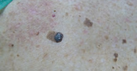
Variación de tamaño y color, con aspecto adherido.
Recopilación Dermatología 2025 · pág. 86.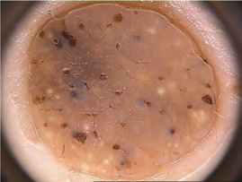
En el caso fuente simulaba una queratosis seborreica irritada.
Recopilación Dermatología 2025 · pág. 86.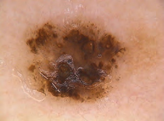
El parecido macroscópico no hace equivalentes las estructuras dermatoscópicas.
Recopilación Dermatología 2025 · pág. 86.Palpa la aspereza y decide si tratas una lesión, un campo o una posible invasión
Las queratosis actínicas son manifestaciones de daño ultravioleta acumulado. Suelen aparecer en cara, cuero cabelludo alopécico, orejas, escote y dorso de manos; cuando son numerosas, la piel aparentemente sana entre ellas también forma parte del problema.
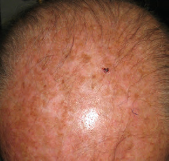
La carga clínica no se limita a cada placa visible.
Recopilación Dermatología 2025 · pág. 46.Biopsia antes de destruir si aparece
- Induración o infiltración palpable.
- Dolor persistente, sensibilidad o crecimiento rápido.
- Hiperqueratosis marcada, nódulo o cuerno con base engrosada.
- Ulceración o sangrado espontáneo.
- Fracaso tras un tratamiento correcto.
- Inmunosupresión o duda con léntigo maligno/CBC superficial.
Crioterapia o curetaje según localización, grosor, experiencia y preferencias; revisa la respuesta.
5-fluorouracilo, imiquimod, diclofenaco, tirbanibulina o terapia fotodinámica se seleccionan por área, carga y tolerancia.
Ropa, sombrero, sombra y fotoprotector de amplio espectro; revisa exposición ocupacional y nuevas lesiones.
No congeles una lesión infiltrada o ulcerada: la destrucción elimina la posibilidad de medir y tipificar.
La concentración, pauta, superficie máxima y contraindicaciones cambian según el producto. Comprueba la ficha CIMA vigente, anticipa la inflamación esperada y deja por escrito cuándo pausar y cuándo revisar.
CBC y CEC no son dos nombres para la misma conducta
Ambos requieren confirmación histológica en la mayoría de escenarios, pero el CBC suele ser un problema de control local, mientras que el CEC añade riesgo ganglionar y sistémico. La prioridad depende del tumor y del huésped, no de la palabra “cáncer” aislada.
Busca el borde, el brillo, los vasos y la persistencia
El CBC aparece con mayor frecuencia en cabeza y cuello, aunque puede surgir en cualquier localización. Crece lentamente y casi nunca metastatiza, pero puede infiltrar cartílago, párpado, nariz, oreja o planos profundos si se retrasa durante mucho tiempo.
Borde rodado, telangiectasias arboriformes, ulceración central o sangrado recurrente.
Frecuente en tronco; puede simular eczema, psoriasis o queratosis actínica.
Menos llamativo, pero con extensión subclínica y mayor riesgo de resección incompleta.
El pigmento no lo convierte en lesión melanocítica; la dermatoscopia ayuda a separarlo del melanoma.

Tumor brillante y ulcerado en una localización facial de riesgo funcional.
Recopilación Dermatología 2025 · pág. 6.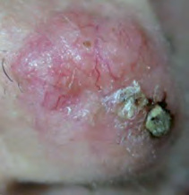
Los vasos finos ramificados y el brillo superficial son pistas clásicas.
Recopilación Dermatología 2025 · pág. 38.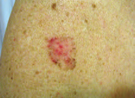
Puede confundirse con queratosis actínica o eczema persistente.
Recopilación Dermatología 2025 · pág. 47.| Eje | Menor riesgo orientativo | Mayor riesgo o complejidad |
|---|---|---|
| Localización | Tronco o extremidades, lejos de zonas funcionales. | Zona central de la cara, periorbitaria, nariz, labios, orejas, manos, pies, genitales o pretibia. |
| Clínica | Pequeño, primario y bien delimitado. | Grande para su zona, mal delimitado, recurrente o sobre radioterapia/cicatriz. |
| Huésped | Inmunocompetente, lesión aislada. | Inmunosupresión, síndrome predisponente o múltiples tumores. |
| Histología | Nodular o superficial, márgenes libres. | Morfeiforme, infiltrativo, micronodular o basoescamoso; invasión perineural o margen afecto. |
La cirugía con control histológico es la primera opción en la mayoría. Mohs o manejo especializado se reservan para localizaciones, bordes, recidivas o subtipos de alto riesgo. Imiquimod, 5-fluorouracilo, terapia fotodinámica, crioterapia o curetaje solo encajan en CBC superficiales y de bajo riesgo cuidadosamente seleccionados; no son atajos para un CBC facial o infiltrativo.
La queratina orienta; la induración y la profundidad deciden
El CEC invasivo suele ser un nódulo o placa hiperqueratósica, friable, dolorosa o ulcerada sobre piel con daño actínico. Puede aparecer de novo, sobre una queratosis actínica, una enfermedad de Bowen, una úlcera crónica o una cicatriz.
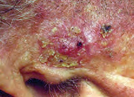
El centro nodular e infiltrado sobre un campo actínico cambia la conducta.
Recopilación Dermatología 2025 · pág. 47.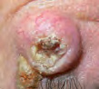
Su crecimiento rápido y su parecido con un CEC justifican extirpación/biopsia, no esperar una involución.
Recopilación Dermatología 2025 · pág. 39.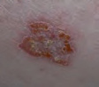
CEC in situ: placa persistente que puede simular eczema o psoriasis.
Recopilación Dermatología 2025 · pág. 39.También cuero cabelludo, párpado, genital, mano, pie y lecho ungueal requieren especial atención.
Induración, fijación, crecimiento rápido, recidiva, pobre diferenciación o invasión perineural elevan riesgo.
Trasplante, hemopatía e inmunosupresores aumentan incidencia, multiplicidad y agresividad.
Parestesias, debilidad o ganglio duro obligan a valoración especializada y estadificación dirigida.
Mide, fotografía, anota recidiva/inmunosupresión y palpa la base. En CEC de riesgo, explora el territorio ganglionar de drenaje.
La muestra debe incluir componente profundo; una escama superficial no permite valorar invasión.
La escisión quirúrgica es la primera línea del CEC resecable. El riesgo clínico e histológico determina margen, Mohs, imagen, radioterapia y seguimiento.
No se solicita imagen rutinaria en todo CEC; sí se estudian los ganglios clínicamente sospechosos y los tumores de muy alto riesgo según equipo especializado.
ABCDE detecta parte del problema; EFG, acral y amelanótico completan la exploración
El melanoma puede aparecer sobre un nevus previo o como una lesión nueva, pigmentada o rosada. La detección temprana cambia radicalmente el pronóstico; por eso importan la evolución, la comparación con el resto de nevos y la biopsia inicial correcta.
El diámetro orienta, pero una lesión menor de 6 mm puede ser melanoma.
Útil para el melanoma nodular, que puede ser simétrico y monocromo.
Una lesión que rompe la “firma” de los demás nevos merece atención aunque cada criterio aislado sea discreto.
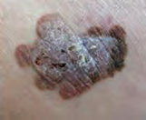
Asimetría, policromía y borde irregular en una lesión predominantemente plana.
Recopilación Dermatología 2025 · pág. 41.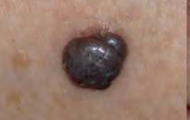
Puede parecer regular: elevación, firmeza y crecimiento son las pistas.
Recopilación Dermatología 2025 · pág. 41.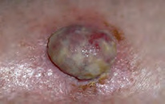
La ausencia de marrón o negro no excluye melanoma en un nódulo nuevo y cambiante.
Recopilación Dermatología 2025 · pág. 41.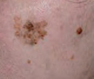
Mácula facial lentamente expansiva sobre piel muy fotodañada; el cambio focal importa.
Recopilación Dermatología 2025 · pág. 41.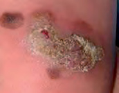
Explora palmas y plantas; no atribuyas automáticamente pigmento o herida al roce.
Recopilación Dermatología 2025 · pág. 41.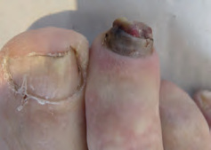
Heterogeneidad, distrofia y extensión periungueal exigen un circuito especializado.
Recopilación Dermatología 2025 · pág. 60.Banda nueva o ensanchada, pigmento periungueal, distrofia, nódulo o lesión plantar que no cura no deben asumirse como hematoma, verruga o roce.
Pápula o nódulo rosado nuevo, firme, ulcerado o sangrante puede ser melanoma aun sin pigmento visible.
Puede incumplir ABCDE: la combinación de elevación, firmeza y crecimiento rápido es suficiente para activar el estudio.
Qué necesita la histología del melanoma
La profundidad de Breslow y la ulceración condicionan estadificación, ampliación quirúrgica y valoración del ganglio centinela. Una destrucción con crioterapia, un curetaje o una muestra demasiado superficial pueden borrar esa información.
La técnica se elige por la pregunta clínica, no por comodidad
| Sospecha | Objetivo | Enfoque práctico | Evita |
|---|---|---|---|
| Melanoma | Confirmar y medir toda la profundidad. | Escisión completa con margen clínico estrecho cuando sea factible y el profesional/circuito estén capacitados. Lesiones faciales grandes, acrales o ungueales requieren planificación especializada. | Crioterapia, curetaje y biopsia superficial; biopsia parcial improvisada de una zona no representativa. |
| CEC | Confirmar invasión, diferenciación y profundidad. | Biopsia representativa de espesor suficiente, incorporando base y borde cuando se use una muestra parcial, o escisión si procede. | Enviar solo queratina/costra o destruir antes de obtener histología. |
| CBC | Confirmar subtipo y planificar tratamiento. | Punch/incisional representativo o escisión según tamaño, localización y plan definitivo. | Tratar como “superficial” sin histología cuando hay borde impreciso, induración o zona de alto riesgo. |
| QA dudosa | Excluir CEC invasivo. | Muestra que alcance la base de la lesión hiperqueratósica o derivación para procedimiento adecuado. | Ciclos repetidos de crioterapia ante induración, úlcera o falta de respuesta. |
Una fotografía bien localizada y una descripción precisa ayudan más al siguiente profesional que una biopsia técnicamente inadecuada. En cara, nariz, párpado, oreja, labio, acral y aparato ungueal, planifica también el defecto y la función.
Prioridad dermatológica no significa acudir a Urgencias
La mayoría de los cánceres cutáneos se diagnostican y tratan por circuitos ambulatorios. “Rápido” describe el tiempo diagnóstico necesario, no una inestabilidad vital ni una indicación de urgencias hospitalarias.
Explica el patrón y da criterios concretos de reconsulta. No hace falta vigilar cada queratosis seborreica.
Consulta dermatológica o procedimiento programado. Acelera el CBC si sitio, tamaño o demora pueden comprometer función o reconstrucción.
También queratoacantoma, lesión infiltrada o dolorosa, inmunosupresión, recidiva o ganglio sospechoso.
Lesión pigmentada o no pigmentada cambiante, dermatoscopia sospechosa, patito feo, nodular, acral o ungueal.
Localización exacta, tamaño en milímetros, tiempo y velocidad de cambio, síntomas, fotografía general y cercana con escala, dermatoscopia si procede, cáncer previo, inmunosupresión, tratamiento realizado y exploración ganglionar cuando sea relevante.
| Tumor | Qué revisar en anatomía patológica | Seguimiento orientativo |
|---|---|---|
| CBC | Subtipo, márgenes, profundidad y datos de invasión perineural/basoescamosa. | Un CBC aislado y bien tratado puede no necesitar seguimiento especializado prolongado; sí autoexploración y control ajustado si es múltiple o de alto riesgo. |
| CEC | Diámetro, grosor/profundidad, diferenciación, invasión perineural/linfovascular y márgenes. | El bajo riesgo puede requerir una revisión educativa; alto o muy alto riesgo necesita vigilancia especializada más estrecha, incluida la cuenca ganglionar. |
| Melanoma | Breslow, ulceración, márgenes, mitosis y otros elementos del informe que definan estadio. | Plan por estadio en Dermatología/Comité: ampliación, posible ganglio centinela, educación y seguimiento cutáneo-ganglionar. |
Referencias utilizadas
- NICE. Suspected cancer: recognition and referral — skin cancers. NG12, revisada en abril de 2026.
- NICE. Melanoma: assessment and management. NG14, actualización 2022.
- British Association of Dermatologists. Guidelines for the management of adults with basal cell carcinoma 2021.
- British Association of Dermatologists. Guidelines for the management of people with cutaneous squamous cell carcinoma 2020.
- British Association of Dermatologists. Guidelines for the care of patients with actinic keratosis 2017.
- Actualización Dermatología 2025 - Recopilación, capítulos 6, 7 y 13. Fuente secundaria y procedencia de las fotografías clínicas.